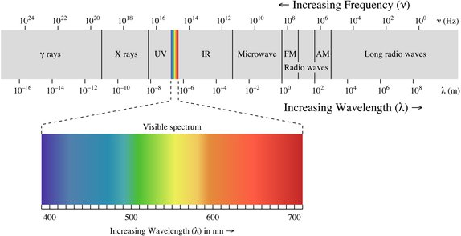

EM spectrum
Radiations having wavelengths longer than infrared radiations are termed as microwaves, with frequencies between 300 MHz and 300 GHz. Rotational spectroscopy. Separations between the rotational levels of molecules are of the order of hundrends of joules per mole.